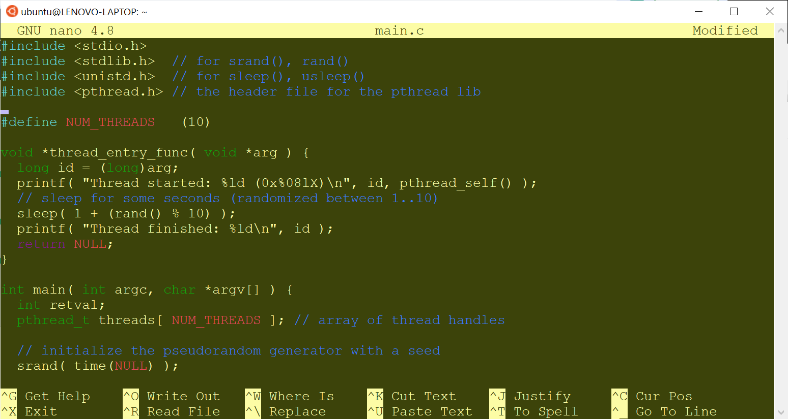

Multi-Threaded C/C++ Programming with Pthreads#
เนื้อหาในส่วนนี้นำเสนอตัวอย่างการเขียนโค้ดในภาษา C/C++ เพื่อสาธิตการทำงานแบบมัลติเธรด (Multi-threading) โดยใช้ไลบรารี POSIX Pthreads
▷ การทำงานแบบมัลติเธรด#
ระบบปฏิบัติการ เช่น Linux มีหน้าที่จัดการโปรแกรมต่าง ๆ ในระบบ หรือที่เรียกว่า "โพรเซส" (Process) แอปพลิเคชัน (Application) หรือโปรแกรมในระดับผู้ใช้ (User-Level Program) ก็ทำงานอยู่ในรูปแบบของโพรเซสในระบบ
หลายโพรเซสสามารถทำงานได้อิสระจากกันและทำงานในช่วงเวลาที่แตกต่างกันหรือทำงานไปได้พร้อม ๆ กัน ดังนั้นจึงเป็นการทำงานแบบหลายโพรเซส (Multi-Processing) หรืออาจจะเรียกว่า เป็นการทำงานแบบมัลติทาสก์โดยใช้โพรเซส (Process-based Multi-tasking)
โพรเซสสามารถสร้างโพรเซสอื่นให้เริ่มต้นทำงานใหม่ได้เช่นกัน เป็นความสัมพันธ์ระหว่างโพรเซสที่เป็นผู้สร้าง (Parent Process) กับโพรเซสที่ถูกสร้าง (Child Process) และเรียกขั้นตอนนี้ว่า Process Forking / Spawning
ในแต่ละโพรเซสก็ยังสามารถแบ่งออกเป็นการทำงานย่อย ๆ ได้อีก เรียกว่า "เธรด" (Thread) เธรดเหล่านั้นทำงานได้พร้อม ๆ กัน (Multi-Threading) หรือเรียกว่า ภาวะการทำงานพร้อมกันในระดับเธรด (Thread-level Concurrency) ซึ่งจะมีประโยชน์และช่วยเพิ่มประสิทธิภาพในการทำงานของระบบเนื่องจากคอมพิวเตอร์มีตัวประมวลผลมากกว่าหนึ่งตัวได้ (ทั้งแบบกายภาพและแบบเสมือน) และเป็นการเพิ่มระดับการทำงานแบบขนานกันในระดับฮาร์ดแวร์ (Parallel Processing)
การทำงานแบบหลายเธรดนั้น สามารถใช้งานได้ทั้งแบบมีซีพียูเดียว (Single-CPU) โดยการแบ่งช่วงเวลากันทำงานระหว่างเธรด ให้ดูเสมือนว่าทำงานไปได้พร้อม ๆ กัน หรือใช้กับการทำงานของซีพียูที่มีหลายแกน (Multi-Core CPU) ก็ได้ แต่ถ้ามีการนำคอมพิวเตอร์มาใช้งานร่วมกันในระบบเครือข่ายที่เชื่อมต่อกันด้วยความเร็วสูง และเขียนโปรแกรมเพื่อให้ทำงานร่วมกัน ให้เป็นส่วนหนึ่งของแอปพลิเคชันเดียวกัน ก็จะเรียกรูปแบบนี้ว่า การประมวลผลหรือคำนวณแบบกระจาย (Distributed Processing / Computing)
เราสามารถเขียนโปรแกรมคอมพิวเตอร์ เพื่อให้มีมากกว่าหนึ่งเธรด และสามารถทำงานได้อิสระจากกัน แต่บางกรณีก็ต้องมีการสื่อสารกันระหว่างเธรด หรือรอจังหวะการทำงานซึ่งกันและกัน (การประสานเวลาระหว่างเธรด) ตามเงื่อนไขที่กำหนด หรือรอเหตุการณ์บางอย่างที่จะเกิดขึ้นในระบบ (Inter-Thread Communication & Synchronization)
ถ้าเปรียบเทียบการทำงานระหว่างโพรเซสกับเธรดภายใต้การจัดการของระบบปฏิบัติการ การสร้างเธรดขึ้นมาใหม่นั้น มีขั้นตอนและการใช้ทรัพยากรของระบบ (หรือเรียกว่า Overhead) น้อยกว่าการสร้างโพรเซส เช่น เธรดที่ถูกสร้างขึ้นภายใต้โพรเซสเดียวกันจะแชร์การใช้หน่วยความจำเดียวกันในโพรเซส แต่ถ้าเป็นการสร้างโพรเซสใหม่ จะมีการแยกหน่วยความจำในการใช้งานระหว่างโพรเซสเหล่านั้น
▷ POSIX Pthreads#
ในกรณีที่เขียนโปรแกรมด้วยภาษา C สำหรับ Linux ก็สามารถใช้ไลบรารีที่มีชื่อว่า POSIX Pthreads (ตามมาตรฐาน (POSIX.1-2001 และ POSIX.1-2008) สำหรับการสร้างและจัดการทำงานของเธรดได้ ตัวอย่างฟังก์ชันการทำงานที่เกี่ยวกับเธรด เช่น
- การสร้างเธรดใหม่ (Thread creation)
- การจบการทำงานของเธรด (Thread termination)
- การทำงานแบบรอจังหวะกันระหว่างเธรด (Thread synchronization)
- การจัดลำดับการทำงานของเธรด (Thread scheduling)
- การจัดการข้อมูลของเธรดและปฏิสัมพันธ์กับโพรเซส (Thread data management and process interaction)
ถ้าเขียนโค้ดโดยใช้ภาษา C++ ก็มีความแตกต่างจากโค้ดภาษา C อยู่บ้าง
แต่ก็สามารถใช้คำสั่งหรือฟังก์ชันของไลบรารี POSIX Pthreads ได้เช่นกัน หรือจะใช้คลาส std::threadสำหรับ C++ เวอร์ชันตั้งแต่ C++11 (หรือใหม่กว่า เช่น C++14 และ C++17 เป็นต้น)
ในกรณีที่เขียนโปรแกรมด้วยภาษาอื่น อย่างเช่น Java หรือ Python ก็มีไลบรารีให้ใช้งานสำหรับการทำงานแบบมัลติเธรดเช่นกัน
การทำงานของเธรดภายใต้โพรเซสเดียวกัน มีการแชร์หรือใช้ทรัพยากรร่วมกันระหว่างเธรด แต่ก็มีสิ่งที่แต่ละเธรดนั้นใช้งานแยกกัน เช่น
- Thread ID เป็นหมายเลขที่แตกต่างกันและใช้ระบุเธรดแต่ละเธรด
- Thread priority เป็นระดับความสำคัญของเธรดและใช้ในการจัดลำดับการทำงานของเธรด
- Set of registers, stack pointer (SP) เป็นหน่วยความจำที่ใช้เก็บค่าของรีจิสเตอร์ต่าง ๆ ของซีพียู และเกี่ยวข้องกับการทำงานของเธรด เนื่องจากมีการแชร์การใช้งานซีพียูร่วมกัน ข้อมูลเหล่านี้จะถูกจัดเก็บลงในหน่วยความจำที่เรียกว่า Stack ของแต่ละเธรด ดังนั้นจึงต้องมีตัวระบุหรือชี้ตำแหน่งบนสุดของ Stack ดังกล่าว
- Stack for local variables, return addresses เป็นหน่วยความจำแบบ Stack ที่ใช้เก็บข้อมูลในขณะที่เธรดกำลังทำงาน เช่น เก็บค่าตัวแปรภายในเมื่อมีการเรียกใช้ฟังก์ชันและจบการทำงานของฟังก์ชัน เป็นต้น
เนื่องจากในการทำงานแบบมัลติเธรด จะต้องมีการแบ่งเวลาหรือสลับเวลาในการทำงานกันระหว่างเธรด ดังนั้นจึงต้องมีการบันทึกสถานะการทำงานของเธรด และเรียกคืนกลับมาทำงานต่อจากตำแหน่งที่ถูกหยุดเอาไว้ชั่วคราว การสลับการทำงานของเธรดในลักษณะนี้เรียกว่า Thread Context Switching
▷ ตัวอย่างโค้ด 1: Thread Creation#
โค้ดตัวอย่างแรกนี้ สาธิตการเขียนโปรแกรม เพื่อสร้างเธรดจำนวน 2 เธรด (Thread 1 และ Thread 2)
โดยใช้คำสั่ง pthread_create(...) ซึ่งจะให้ค่ากลับคืน (Return Value) เป็น 0 ถ้าสร้างเธรดใหม่ได้สำเร็จ
// $ gcc -Wall main.c -o main -lpthread
#include <stdio.h>
#include <stdlib.h> // for srand(), rand()
#include <unistd.h> // for sleep(), usleep()
#include <pthread.h> // the header file for the pthread library
void *thread_entry_func( void *arg ) {
long id = (long)arg;
printf( "Thread '%ld' started\n", id );
// sleep for some seconds (randomized between 1..10)
sleep( 1 + (rand() % 10) );
printf( "Thread '%ld' finished\n", id );
return NULL;
}
int main( int argc, char *argv[] ) {
int retval; // return value from a function call
pthread_t thread1, thread2; // thread handles
// initialize the pseudo-random generator with a seed
srand( time(NULL) );
// create Thread 1
retval = pthread_create(
&thread1 /* used to identify thread 1 */,
NULL /* default attributes */,
thread_entry_func /* start routine */,
(void*) 1 /* thread argument */ );
printf( "Thread creation (1): %s\n", retval ? "FAILED" : "OK" );
// create Thread 2
retval = pthread_create(
&thread2 /* used to identify thread 2 */,
NULL /* default attributes */,
thread_entry_func /* start routine */,
(void*) 2 /* thread argument */ );
printf( "Thread creation (2): %s\n", retval ? "FAILED" : "OK" );
// sleep for 10msec
usleep( 10000 /*usec*/ );
// wait until both threads (thread 1 and 2) are finished.
printf( "\nWaiting for threads to be finished...\n" );
if ( thread1 ) {
pthread_join( thread1, NULL ); // wait for thread 1
}
if ( thread2 ) {
pthread_join( thread2, NULL ); // wait for thread 2
}
printf( "Done...\n\n" );
return 0;
}
ตัวอย่างข้อความเอาต์พุตมีดังนี้
Thread creation (1): OK
Thread '1' started
Thread creation (2): OK
Thread '2' started
Waiting for threads to be finished...
Thread '1' finished
Thread '2' finished
Done...
ในขั้นตอนการสร้างเธรด จะต้องมีการเรียกใช้ฟังก์ชันตามรูปแบบที่กำหนดไว้โดย POSIX Pthreads ดังนี้
int pthread_create(
pthread_t *thread,
const pthread_attr_t *attr,
void *(*start_routine)(void*),
void *arg );
ฟังก์ชัน thread_entry_func(...) ในโค้ดตัวอย่างนี้ เป็นฟังก์ชันสำหรับ Thread Start Routine
หรือเรียกว่า Thread Entry Function เป็นฟังก์ชันสำหรับการทำงานของเธรด
ทั้งสองเธรดในตัวอย่างนี้ มีการใช้ฟังก์ชันดังกล่าวร่วมกัน และเมื่อสร้างเธรดขึ้นมาแล้ว
จะใช้ตัวแปรที่มีชนิดข้อมูลเป็น pthread_t เป็นตัวอ้างอิงแต่ละเธรด
ฟังก์ชันของเธรดจะรับค่าอาร์กิวเมนต์มาเป็นพอยน์เตอร์แบบ void *
แต่ในตัวอย่างนี้ จะมีการแปลงให้เป็นเลขจำนวนเต็ม
(ชนิดข้อมูลแบบ long) เพื่อใช้จำแนกว่าเป็นเธรดหมายเลขใด
เมื่อทำคำสั่งต่าง ๆ ของฟังก์ชันนี้ จะมีการรอเวลาให้ผ่านไปโดยใช้คำสั่ง sleep(...)
ระยะเวลาในการรอหน่วยเป็นวินาที เช่น ได้จากการใช้คำสั่ง rand(...) เพื่อสุ่มค่าตัวเลขจำนวนเต็ม
โดยกำหนดให้มีค่าอยูในช่วง 1..10 วินาที เมื่อรอเวลาตามที่กำหนดไว้แล้ว การทำงานของเธรดจึงจบลง
(แต่ละเธรดจะใช้เวลารอไม่เหมือนกัน เพราะอาจสุ่มเลขได้ค่าต่างกัน ดังนั้นจึงจบการทำงานไม่พร้อมกัน)
ในการทำงานของโปรแกรมนี้ เมื่อได้สร้างเธรดใหม่ทั้งสองแล้ว ได้กำหนดให้มีการรอให้เธรดทั้งสองจบการทำงานก่อน
จึงจะจบการทำงานของโปรแกรม การรอคอยให้เธรดของโพรเซสจบการทำงานนั้น จะต้องใช้คำสั่ง pthread_join(...)
ดังนั้นจึงเป็นการเรียกฟังก์ชันแบบ Blocking Call หรือ รอไปแบบไม่มีเวลาจำกัดจนกว่าเงื่อนไขจะเป็นจริง
จากโค้ดตัวอย่างทั้งสองเธรดนั้นมีฟังก์ชันการทำงานเหมือนกัน แต่รับค่าสำหรับอาร์กิวเมนต์ที่แตกต่างกันเมื่อเธรดถูกสร้างขึ้น
ถัดไปเป็นการปรับแก้โค้ดใหม่เพื่อสร้างเธรดตามจำนวนที่กำหนดไว้โดย NUM_THREADS
เช่น กำหนดให้มีค่าเท่ากับ 10 จากเดิมที่มีเพียง 2 เธรด
#include <stdio.h>
#include <stdlib.h> // for srand(), rand()
#include <unistd.h> // for sleep(), usleep()
#include <pthread.h> // the header file for the pthread lib
#define NUM_THREADS (10)
void *thread_entry_func( void *arg ) {
long id = (long)arg;
printf( "Thread '%ld' started (0x%08lX)\n", id, pthread_self() );
// sleep for some seconds (randomized between 1..10)
sleep( 1 + (rand() % 10) );
printf( "Thread '%ld' finished\n", id );
return NULL;
}
int main( int argc, char *argv[] ) {
int retval;
pthread_t threads[ NUM_THREADS ]; // array of thread handles
// initialize the pseudorandom generator with a seed
srand( time(NULL) );
// create a number of threads
for ( int i=0; i < NUM_THREADS; i++ ) {
long id = (i+1); // used as thread argument
retval = pthread_create(
&threads[i], NULL,
thread_entry_func,
(void*) id );
printf( "main> thread creation (%ld): %s\n", id,
retval ? "FAILED" : "OK" );
if ( retval ) { // thread creation error
printf( "Program terminated...\n" );
exit(1);
}
}
// sleep for 1msec before proceeding
usleep( 1000 /*usec*/ );
// wait until all threads are finished.
printf( "\nWaiting for all threads to be finished..\n" );
for ( int i=0; i < NUM_THREADS; i++ ) {
pthread_join( threads[i], NULL ); // wait for thread
}
printf( "Done...\n\n" );
return 0;
}
สำหรับการคอมไพล์โค้ดตัวอย่าง ถ้าตั้งชื่อไฟล์เป็น main.c และเขียนโค้ดตามตัวอย่าง ก็สามารถทำคำสั่งแบบ
Command Line ใน Linux Terminal ดังนี้
คำสั่งแรกนี้เป็นการติดตั้ง GCC Compiler และ Build Tools ที่เกี่ยวข้อง
สำหรับระบบปฏิบัติการ Linux (Ubuntu/Debian Distro)
และลองตรวจสอบเวอร์ชันของ gcc ดังนี้
$ sudo apt install gcc g++ build-essential
$ gcc --version
gcc (Ubuntu 9.3.0-17ubuntu1~20.04) 9.3.0
Copyright (C) 2019 Free Software Foundation, Inc.
This is free software; see the source for copying conditions. There is NO
warranty; not even for MERCHANTABILITY or FITNESS FOR A PARTICULAR PURPOSE.
คำสั่งที่สองเป็นการคอมไพล์โค้ดในไฟล์ main.c ให้กลายเป็นไฟล์ไบนารี (executable) ที่มีชื่อว่า main
$ gcc -Wall ./main.c -o main -lpthread
โดยที่ -Wall หมายถึง การให้คอมไพลเลอร์แสดงข้อความแจ้งเตือนต่าง ๆ เมื่อคอมไพล์โค้ด -o เป็นการระบุชื่อไฟล์เอาต์พุต
และ -lpthread เป็นการบอกว่า ให้โปรแกรม Linker ของ GCC ใช้ไลบรารี Pthread

รูป: ตัวอย่างการใช้โปรแกรม nano แก้ไขโค้ดในไฟล์ main.c
ตัวอย่างเอาต์พุตเมื่อรันโปรแกรม ./main มีดังนี้ และจะเห็นได้ว่า
ลำดับในการจบการทำงานของเธรดก็อาจแตกต่างจากลำดับในการสร้างเธรด
และถ้ารันโปรแกรมนี้อีกครั้ง จะให้ผลที่แตกต่างไปจากเดิม
$ ./main
main> thread creation (1): OK
Thread '1' started (0x7FE7F8F41700)
main> thread creation (2): OK
Thread '2' started (0x7FE7F8740700)
main> thread creation (3): OK
Thread '3' started (0x7FE7F7F3F700)
main> thread creation (4): OK
Thread '4' started (0x7FE7F773E700)
main> thread creation (5): OK
Thread '5' started (0x7FE7F6F3D700)
main> thread creation (6): OK
Thread '6' started (0x7FE7F673C700)
main> thread creation (7): OK
Thread '7' started (0x7FE7F5F3B700)
main> thread creation (8): OK
Thread '8' started (0x7FE7F573A700)
main> thread creation (9): OK
Thread '9' started (0x7FE7F4F39700)
main> thread creation (10): OK
Thread '10' started (0x7FE7F4738700)
Waiting for all threads to be finished..
Thread '10' finished
Thread '3' finished
Thread '4' finished
Thread '6' finished
Thread '2' finished
Thread '5' finished
Thread '7' finished
Thread '9' finished
Thread '8' finished
Thread '1' finished
Done...
▷ ตัวอย่างโค้ด 2: Thread Attribute#
ในขั้นตอนการสร้างเธรดใหม่ เราสามารถกำหนดคุณสมบัติของเธรด (pthread_attr_t)
ที่จะถูกสร้างขึ้นใหม่ได้โดยใช้คำสั่ง pthread_attr_init(...) และมีตัวอย่างการเขียนโค้ดดังนี้
เช่น การกำหนดให้เธรดมีสถานะเป็น joinable และการกำหนดขนาดของ Stack
สำหรับการทำงานของเธรด เป็นต้น
#include <stdio.h>
#include <stdlib.h>
#include <unistd.h> // for sleep(), usleep()
#include <pthread.h> // the header file for the pthread lib
void *thread_entry_func( void *arg ) {
printf( "Thread is active.\n" );
return NULL;
}
int main( int argc, char *argv[] ) {
int retval; // return value
size_t stack_size; // thread stack size
pthread_attr_t attr; // thread attribute
pthread_t thread; // thread handle
// create a thread attribute object
retval = pthread_attr_init( &attr );
if ( retval ) {
printf( "Error while creating thread attribute!\n" );
exit(1);
}
// use a joinable thread
pthread_attr_setdetachstate( &attr, PTHREAD_CREATE_JOINABLE );
// get the default stack size
pthread_attr_getstacksize( &attr, &stack_size );
printf( "Default thread stack size: %ld\n", stack_size );
// set the stack size (use a larger value, say 4 times larger)
pthread_attr_setstacksize( &attr, 4*stack_size );
// now, create a new thread using the specified thread attribute
retval = pthread_create(
&thread, &attr, thread_entry_func, NULL );
printf( "Thread creation %s\n", retval ? "FAILED" : "OK" );
sleep(1);
// get the thread stack size
pthread_attr_getstacksize( &attr, &stack_size );
printf( "Thread stack size: %ld\n", stack_size );
pthread_attr_destroy( &attr ); // destroy thread attribute
if ( thread ) {
pthread_join( thread, NULL ); // wait for thread
}
printf( "Done...\n\n" );
return 0;
}
▷ ตัวอย่างโค้ด 3: Binary Semaphore#
โค้ดในตัวอย่างนี้สาธิตการใช้งานสิ่งที่เรียกว่า "เซมาฟอร์แบบไบนารี" (Binary Semaphore)
เพื่อใช้ส่งสัญญาณสื่อสารกันระหว่างเธรด เช่น ให้เธรดหนึ่งรอสัญญาณจากอีกเธรดหนึ่ง
หรือในกรณีที่มีการเข้าใช้ทรัพยากรของระบบร่วมกัน
เช่น การเรียกใช้ฟังก์ชัน printf() ของ Standard C library โดยเธรด
คำสั่งที่เกี่ยวข้องกับการใช้งานเซมาฟอร์แบบไบนารีของ POSIX Pthreads มีดังนี้
sem_init(...)สร้างเซมาฟอร์ขึ้นมาใหม่และตั้งค่าเริ่มต้นของตัวนับsem_wait(...)รอการใช้งานเซมาฟอร์ โดยให้ลดค่าลงจาก 1 เป็น 0 แต่ถ้ามีค่าเป็น 0 ในขณะนั้น ให้รอไปก่อนsem_trywait(...)เหมือนsem_wait(...)แต่ไม่มีการรอ ถ้าทำได้สำเร็จ จะได้ค่ากลับคืนเป็น 0 แต่ถ้าไม่สำเร็จได้ค่าเป็น -1sem_post(...)เพิ่มค่าเซมาฟอร์ให้เป็น 1 ทันทีโดยไม่ต้องรอsem_destroy(...)เลิกใช้งานเซมาฟอร์ที่ถูกสร้างขึ้นมาใช้งาน
เซมาฟอร์แบบไบนารีมีค่าเริ่มต้นเป็น 1 หลังจากนั้นเมื่อมีการเข้าใช้งานโดยเธรดและทำคำสั่ง sem_wait(...) ได้สำเร็จ
ก็จะลดค่าลงเป็น 0 แต่ถ้ามีค่าเป็น 0 ในขณะนั้นและมีเธรดใดต้องการใช้งาน จะต้องรอไปก่อน
เมื่อใช้งานเซมาฟอร์แล้วก็ต้องเพิ่มค่าให้เป็น 1 ด้วยคำสั่ง sem_post(...)
ข้อสังเกต: ถ้าให้ตัวนับของเซมาฟอร์มีค่าเริ่มต้นมากกว่า 1 เราจะเรียกว่า "เซมาฟอร์แบบนับ" (Counting Semaphore)
#include <stdio.h>
#include <stdlib.h>
#include <unistd.h> // for sleep(), usleep()
#include <pthread.h> // the header file for the pthread lib
#include <semaphore.h>
#define NUM_THREADS (10) // number of threads
// global variable
sem_t semaphore; // binary semaphore
void *thread_entry_func( void *arg ) {
long id = (long)arg;
sleep(1);
sem_wait( &semaphore ); // acquire the binary semaphore
printf( "Thread '%ld' is active.\n", id );
fflush( stdout ); // flush stdout
sem_post( &semaphore ); // release the binary semaphore
return NULL;
}
int main( int argc, char *argv[] ) {
int retval;
pthread_t threads[ NUM_THREADS ];
// create a binary semaphore
// note:the semaphore will be shared between threads of the process
sem_init( &semaphore, 0 /*pshared*/, 1 /*initial value*/ );
// create Threads
for ( int i=0; i < NUM_THREADS; i++ ) {
long id = (i+1L);
retval = pthread_create(
&threads[i], NULL,
thread_entry_func,
(void*)id );
printf( "Thread creation ('%ld'): %s\n", id,
retval ? "FAILED" : "OK" );
if (retval) {
exit(1);
}
}
sleep(1);
for ( int i=0; i < NUM_THREADS; i++ ) {
if ( threads[i] ) {
pthread_join( threads[i], NULL ); // wait for thread
}
}
sem_destroy( &semaphore ); // destroy semaphore
printf( "Done...\n\n" );
return 0;
}
ตัวอย่างข้อความเอาต์พุตเมื่อรันโปรแกรม
$ ./main
Thread creation ('1'): OK
Thread creation ('2'): OK
Thread creation ('3'): OK
Thread creation ('4'): OK
Thread creation ('5'): OK
Thread creation ('6'): OK
Thread creation ('7'): OK
Thread creation ('8'): OK
Thread creation ('9'): OK
Thread creation ('10'): OK
Thread '2' is active.
Thread '9' is active.
Thread '10' is active.
Thread '4' is active.
Thread '5' is active.
Thread '7' is active.
Thread '6' is active.
Thread '8' is active.
Thread '1' is active.
Thread '3' is active.
Done...
▷ ตัวอย่างโค้ด 4: Producer-Consumer Problem#
ในการทำงานร่วมกันระหว่างเธรดตามรูปแบบที่เรียกว่า "ผู้ผลิต-ผู้บริโภค" (Producer-Consumer Pattern) มีเธรดหนึ่งทำหน้าที่สร้างข้อมูล (Producer) แล้วส่งต่อให้อีกเธรดหนึ่งที่รออยู่ (Consumer) กล่าวคือ มีการรอจังหวะการทำงานระหว่างกันหรือประสานเวลากัน (Inter-Thread Synchronization) เช่น เธรดที่สร้างข้อมูลจะต้องรอให้อีกเธรดหนึ่งรับข้อมูลไปใช้ก่อนที่จะสร้างข้อมูลลำดับถัดไป มิเช่นนั้นก็อาจเกิดปัญหาได้ หรือที่เรียกว่า "สภาวะเงื่อนไขการแย่งชิง" (Race Condition) ในกรณีที่มีการใช้ตัวแปรร่วมกัน (Shared Variable)
ดังนั้นในกรณีนี้ จึงจะใช้สิ่งที่เรียกว่า Mutex (ซึ่งเป็นคำย่อมาจาก Mutual Exclusive) ทำหน้าที่เป็นเสมือนล็อคป้องกัน หรือ "ตัวปิดกั้น" (Lock) เพื่อเข้าใช้งานทรัพยากรร่วม หรือเพื่อการจำกัดสิทธิ์การเข้าถึงทรัพยากรร่วมระหว่างเธรด ยกตัวอย่างเช่น
ถ้ามีหลายเธรด และต้องการให้ในช่วงเวลาใดเวลาหนึ่ง มีเพียงเธรดเดียวเท่านั้นที่เข้าใช้ทรัพยากรร่วมได้ ถ้าเธรดใดจะเข้าถึงตัวแปรที่แชร์ใช้งานร่วมกัน จะต้องพยายามใส่ล็อคเพื่อป้องกันมิให้เธรดอื่นเข้ามาใช้งานได้ และเมื่อเสร็จแล้ว ก็ต้องปลดล็อคดังกล่าว
การทำงานของ Mutex มีลักษณะคล้ายกับเซมาฟอร์แบบไบนารี แต่ก็มีความแตกต่างกัน เช่น หลักการทำงานแบบมีเจ้าของ (Ownership) และ Recursive Mutex คือ สามารถเข้าใช้งานซ้ำได้
คำสั่งที่เกี่ยวกับการใช้งาน Mutex Lock (pthread_mutex_t) ที่สำคัญได้แก่
pthread_mutex_init(...)เพื่อสร้างและเริ่มต้นใช้งาน Mutexpthread_mutex_lock(...)เพื่อปิดล็อคของ Mutex แต่ถ้าไม่ได้จะบล็อกการทำงานของเธรดไปจนกว่าจะปิดล็อคได้pthread_mutex_trylock(...)เพื่อลองดูว่าสามารถปิดล็อคของ Mutex ได้หรือไม่ ถ้าไม่ได้ ก็จะไม่มีการบล็อกการทำงานของเธรดpthread_mutex_unlock(...)เพื่อปลดล็อคของ Mutexpthread_destroy(...)เลิกใช้งาน Mutex
ในตัวอย่างนี้ ตัวแปร message ซึ่งเป็นอาร์เรย์แบบ char * สำหรับเก็บข้อความ (String)
จะถูกใช้ในการส่งข้อมูลระหว่างเธรดที่เป็น Producer และ Consumer
ดังนั้นจึงถือว่าเป็นส่วนที่เรียกว่า "เขตวิกฤต" หรือ "ส่วนวิกฤต" (Critical Section)
ถ้าจะเข้าใช้งานตัวแปรนี้จะต้องมีการใช้ Mutex Lock ก่อนทุกครั้ง และจะมีการสร้างข้อความทั้งหมด 10 ครั้ง
เธรดที่ทำหน้าที่เป็น Producer จะต้องตรวจสอบก่อนว่า ตัวแปร flag เป็น false หรือไม่
จึงจะเขียนข้อความใหม่ลงไป เธรดที่เป็น Consumer จะต้องตรวจสอบค่าของตัวแปรนี้เช่นกัน
แต่เมื่อนำข้อความไปใช้แสดงผลแล้วเปลี่ยนค่าของตัวแปร flag เป็น true
#include <stdio.h>
#include <stdlib.h>
#include <unistd.h>
#include <string.h>
#include <stdbool.h>
#include <pthread.h>
// global variables
static pthread_mutex_t lock = PTHREAD_MUTEX_INITIALIZER;
static char message[32]; // used as shared variable
static bool running = true;
static bool flag = false;
void *producer_func( void *arg ) {
int cnt = 1; // counter variable
while (cnt <= 10) { // repeat 10 times
// acquire mutex lock (blocking call)
pthread_mutex_lock( &lock );
if ( !flag ) {
snprintf( message, sizeof(message),
"hello #%d", cnt++ );
printf( "Producer> %s\n", message );
flag = true; // set flag (message available)
}
// release the mutex lock
pthread_mutex_unlock( &lock );
// sleep for a random number of microseconds
usleep( 1000 + (rand() % 1000) );
}
return NULL;
}
void *consumer_func( void *arg ) {
while (running) {
// acquire mutex lock (blocking call)
pthread_mutex_lock( &lock );
if ( flag ) {
printf( "Consumer> %s\n\n", message );
message[0] = '\0'; // clear message string
flag = false; // clear flag
usleep( (rand() % 1000)*1000 );
}
// release the mutex lock
pthread_mutex_unlock( &lock );
usleep(1);
}
return NULL;
}
int main( int argc, char *argv[] ) {
int retval;
pthread_t producer_thread, consumer_thread;
// initialize the pseudorandom generator with a seed
srand( time(NULL) );
// clear message buffer
memset( message, 0, sizeof(message) );
// create a mutex lock
if ( pthread_mutex_init( &lock, NULL ) ) {
printf( "Mutex initialization failed!\n" );
exit(1);
}
// create producer and consumer threads
retval = pthread_create(
&producer_thread, NULL,
producer_func, (void*) NULL );
if (retval) {
printf( "Producer thread creation failed!\n" );
exit(1);
}
retval = pthread_create(
&consumer_thread, NULL,
consumer_func, (void*) NULL );
if (retval) {
printf( "Consumer thread creation failed!\n" );
exit(1);
}
// sleep for 10msec before proceeding
usleep( 10000 /*usec*/ );
// wait for producer thread
pthread_join( producer_thread, NULL );
running = false; // change running flag to false
pthread_cancel( consumer_thread ); // cancel consumer thread
pthread_join( consumer_thread, NULL ); // wait for consumer thread
pthread_mutex_destroy( &lock ); // destroy mutex lock
printf( "Done...\n\n" );
return 0;
}
ในตัวอย่างนี้ เธรด Producer จะจบการทำงานเมื่อได้สร้างข้อความตามจำนวนที่กำหนดไว้ครบแล้ว
(เช่น 10 ครั้ง) แต่สำหรับการทำงานของเธรด Consumer จะมีการใช้คำสั่ง pthread_cancel(...)
เพื่อขอให้จบการทำงานหลังจากนั้น
ถ้าจะลองเปลี่ยนมาใช้คำสั่ง pthread_mutex_trylock(...)
สำหรับฟังก์ชันการทำงานของเธรด ก็มีตัวอย่างโค้ดดังนี้
void *producer_func( void *arg ) {
int cnt = 1;
while (cnt <= 10) {
// try to acquire mutex lock (non-blocking call)
while( pthread_mutex_trylock( &lock ) ) {
usleep( 1000 );
}
if ( !flag ) {
snprintf( message, sizeof(message),
"hello #%d", cnt++ );
printf( "Producer> %s\n", message );
flag = true; // set flag (message available)
}
pthread_mutex_unlock( &lock );
// sleep for a random number of microseconds
usleep( 1000 + (rand() % 1000) );
}
return NULL;
}
void *consumer_func( void *arg ) {
while (running) {
// try to acquire mutex lock (non-blocking call)
while( pthread_mutex_trylock( &lock ) ) {
usleep( 1000 );
}
if ( flag ) {
printf( "Consumer> %s\n\n", message );
message[0] = '\0'; // clear message string
flag = false; // clear flag
// sleep for a random number of microseconds
usleep( (rand() % 1000)*1000 );
}
pthread_mutex_unlock( &lock );
usleep(1);
}
return NULL;
}
▷ ตัวอย่างโค้ด 5: Condition Variable#
ถ้าต้องการให้เธรดหยุดรอเหตุการณ์หรือเงื่อนไข (Waiting / Blocked) ตามที่กำหนดไว้ จนกว่าเงื่อนไขจะเป็นจริง แล้วจึงให้ทำงานต่อไป ในสถานการณ์เช่นนี้ เราสามารถใช้ตัวแปรประเภทหนึ่งที่เรียกว่า "ตัวแปรเงื่อนไข" (Condition Variable) และการทำให้เงื่อนไขเป็นจริงได้นั้น จะต้องมีการส่งสัญญาณ (Signaling) จากเธรดอื่นมา
ตัวแปรเงื่อนไขจึงเป็นอีกวิธีการหนึ่งในการสื่อสารกันระหว่างเธรด (Inter-Thread Communication)
ในไลบรารีของ POSIX Pthread ก็มีคำสั่งสำหรับการใช้งาน Condition Variable
(ชนิดข้อมูล pthread_cond_t) โดยจะต้องใช้ร่วมกับ Mutex
(ชนิดข้อมูล pthread_mutex_t) และมีคำสั่งที่เกี่ยวข้องได้แก่
pthread_cond_init(...)สร้างและเริ่มต้นใช้งานตัวแปรเงื่อนไขpthread_cond_wait(...)รอจนกว่าตัวแปรเงื่อนไขจะเป็นจริงpthread_cond_timedwait(...)รอจนกว่าตัวแปรเงื่อนไขจะเป็นจริง แต่มีระยะเวลาจำกัดในการรอpthread_cond_signal(...)ส่งสัญญาณไปยังเธรดที่รออยู่ เพื่อระบุว่าตัวแปรเงื่อนไขเป็นจริง และเธรดที่รอเงื่อนไขอยู่จะทำงานต่อได้pthread_cond_broadcast(...)ส่งสัญญาณไปยังทุกเธรดที่รออยู่ เพื่อระบุว่าตัวแปรเงื่อนไขเป็นจริงpthread_cond_destroy(...)เลิกใช้งานตัวแปรแบบเงื่อนไข
ตัวอย่างนี้สาธิตการสร้างเธรดขึ้นมาใหม่ และให้เธรดดังกล่าวรอให้มีการส่งสัญญาณมาจากเธรดหลักในฟังก์ชัน main()
และเพิ่มค่าตัวนับของตัวแปรภายในและแสดงข้อความตัวเลขดังกล่าว
การส่งสัญญาณสำหรับตัวแปรเงื่อนไขในตัวอย่างจะเกิดขึ้นทั้งหมด 10 ครั้ง
#include <stdio.h>
#include <stdlib.h>
#include <unistd.h>
#include <pthread.h>
// global variables
static pthread_mutex_t mutex = PTHREAD_MUTEX_INITIALIZER;
static pthread_cond_t cond = PTHREAD_COND_INITIALIZER;
void *thread_func( void *arg ) {
int ticks = 0;
while (1) {
pthread_mutex_lock( &mutex );
// wait for signal
if ( !pthread_cond_wait( &cond, &mutex ) ) {
printf( "ticks: %d\n", ++ticks );
}
pthread_mutex_unlock( &mutex );
}
printf( "Thread finished..\n" );
return NULL;
}
int main( int argc, char *argv[] ) {
int retval;
pthread_t thread;
// create a mutex lock
if ( pthread_mutex_init( &mutex, NULL ) ) {
printf( "Mutex initialization failed!\n" );
exit(1);
}
// create a condition variable
if ( pthread_cond_init( &cond, NULL ) ) {
printf( "Condition variable initialization failed!\n" );
exit(1);
}
// create a thread
retval = pthread_create(
&thread, NULL, thread_func, (void*) NULL );
if (retval) {
printf( "Thread creation failed!\n" );
exit(1);
}
usleep(10);
for ( int i=0; i < 10; i++ ) { // repeat 10 times
pthread_mutex_lock( &mutex );
pthread_cond_signal( &cond );
pthread_mutex_unlock( &mutex );
sleep(1);
}
pthread_cancel( thread );
pthread_join( thread, NULL );
pthread_cond_destroy( &cond ); // destroy condition variable
pthread_mutex_destroy( &mutex ); // destroy mutex lock
printf( "Done...\n\n" );
return 0;
}
แต่ถ้าจะลองเปลี่ยนมาใช้คำสั่ง pthread_cond_timewait(...)
เพื่อให้เธรดสามารถรอเงื่อนไข แต่มีระยะเวลาจำกัด (Timeout) เช่น 1 วินาที
แล้วจึงตรวจสอบซ้ำ ก็มีตัวอย่างโค้ดดังนี้
#include <stdio.h>
#include <stdlib.h>
#include <unistd.h>
#include <time.h>
#include <sys/time.h>
#include <pthread.h>
// global variables
static pthread_mutex_t mutex = PTHREAD_MUTEX_INITIALIZER;
static pthread_cond_t cond = PTHREAD_COND_INITIALIZER;
static struct timespec ts; // used to read timestamp
void *thread_func( void *arg ) {
int ticks = 0;
int retval;
struct timeval now;
while (1) {
pthread_mutex_lock( &mutex );
// wait for signal with timeout (1 second)
gettimeofday( &now, NULL );
ts.tv_sec = now.tv_sec + 1; // plus 1 second
ts.tv_nsec = now.tv_usec * 1000;
// wait for condition variable with timeout
retval = pthread_cond_timedwait( &cond, &mutex, &ts );
if ( retval == 0 ) { // success
printf( "ticks: %d\n", ++ticks );
} else { // timeout
time_t now;
time( &now ); // get current time
printf( "timeout at %s\n", ctime(&now) );
}
fflush( stdout );
pthread_mutex_unlock( &mutex );
}
printf( "Thread finished..\n" );
return NULL;
}
int main( int argc, char *argv[] ) {
int retval;
pthread_t thread;
srand( time(NULL) );
// create a mutex lock
if ( pthread_mutex_init( &mutex, NULL ) ) {
printf( "Mutex initialization failed!\n" );
exit(1);
}
// create a condition variable
if ( pthread_cond_init( &cond, NULL ) ) {
printf( "Conditional variable initialization failed!\n" );
exit(1);
}
// create a thread
retval = pthread_create(
&thread, NULL, thread_func, (void*) NULL );
if (retval) {
printf( "Thread creation failed!\n" );
exit(1);
}
usleep(10);
for ( int i=0; i < 10; i++ ) { // repeat 10 times
pthread_mutex_lock( &mutex );
pthread_cond_signal( &cond );
pthread_mutex_unlock( &mutex );
// sleep for a random number of microseconds
usleep( (rand()%2000)*1000 );
}
pthread_cancel( thread );
pthread_join( thread, NULL );
pthread_cond_destroy( &cond ); // destroy condition variable
pthread_mutex_destroy( &mutex ); // destroy mutex lock
printf( "Done...\n\n" );
return 0;
}
▷ ตัวอย่างโค้ด 6: Producer-Consumer Problem (Revisited)#
จากตัวอย่างการสื่อสารกันระหว่างเธรดแบบ Producer-Consumer หากต้องการจะใช้งานตัวแปรเงื่อนไข เช่น สำหรับเธรด Producer และเธรด Consumer (แยกกันในสองทิศทาง) แต่จะต้องมีการใช้ Mutex ร่วมด้วย ก็มีแนวทางดังนี้
- เธรด Producer จะต้องรอตัวแปรเงื่อนไข
cond_pและมีการส่งสัญญาณจากเธรด Consumer - เธรด Consumer จะต้องรอตัวแปรเงื่อนไข
cond_cและมีการส่งสัญญาณจากเธรด Producer
#include <stdio.h>
#include <stdlib.h>
#include <unistd.h>
#include <string.h>
#include <stdbool.h>
#include <time.h>
#include <pthread.h>
// global variables
static pthread_mutex_t mutex = PTHREAD_MUTEX_INITIALIZER;
static pthread_cond_t cond_c = PTHREAD_COND_INITIALIZER;
static pthread_cond_t cond_p = PTHREAD_COND_INITIALIZER;
static char message[32] = {'\0'};
static bool flag = false;
void *producer_thread_func( void *arg ) {
int ticks = 0;
while (1) {
pthread_mutex_lock( &mutex );
while ( flag ) {
// wait for signal from consumer thread
pthread_cond_wait( &cond_p, &mutex );
}
flag = true; // set flag (message available)
snprintf( message, sizeof(message), "test %d", ++ticks );
printf( "Producer> %s\n", message );
// send signal to consumer thread
pthread_cond_signal( &cond_c );
pthread_mutex_unlock( &mutex );
usleep( (1+rand()%1000)*1000 );
if (ticks >= 10) break; // repeat 10 times
}
printf( "Producer thread finished..\n" );
return NULL;
}
void *consumer_thread_func( void *arg ) {
while (1) {
pthread_mutex_lock( &mutex );
while ( !flag ) {
// wait for signal from consumer thread
pthread_cond_wait( &cond_c, &mutex );
}
flag = false; // clear flag
printf( "Consumer> %s\n\n", message );
message[0] = '\0';
// send signal to producer thread
pthread_cond_signal( &cond_p );
pthread_mutex_unlock( &mutex );
usleep( (1+rand()%1000)*1000 );
}
printf( "Consumer thread finished..\n" );
return NULL;
}
int main( int argc, char *argv[] ) {
int retval;
pthread_t thread_p, thread_c;
srand( time(NULL) );
// create a mutex lock
if ( pthread_mutex_init( &mutex, NULL ) ) {
printf( "Mutex initialization failed!\n" );
exit(1);
}
// create condition variables
if ( pthread_cond_init( &cond_p, NULL ) ) {
printf( "Condition variable initialization failed!\n" );
exit(1);
}
if ( pthread_cond_init( &cond_c, NULL ) ) {
printf( "Condition variable initialization failed!\n" );
exit(1);
}
// create Producer thread
retval = pthread_create(
&thread_p, NULL,
producer_thread_func,
(void*) NULL );
if (retval) {
printf( "Producer thread creation failed!\n" );
exit(1);
}
// create Consumer thread
retval = pthread_create(
&thread_c, NULL,
consumer_thread_func,
(void*) NULL );
if (retval) {
printf( "Consumer thread creation failed!\n" );
exit(1);
}
pthread_join( thread_p, NULL );
pthread_cancel( thread_c );
pthread_join( thread_c, NULL );
pthread_cond_destroy( &cond_p );
pthread_cond_destroy( &cond_c );
pthread_mutex_destroy( &mutex );
printf( "Done...\n\n" );
return 0;
}
▷ ตัวอย่างโค้ด 7: Condition Variable with Broadcasting#
ถ้าจะลองใช้คำสั่ง pthread_cond_broadcast() เพื่อส่งสัญญาณไปยังทุกเธรดในกรณีที่มีหลายเธรด
(ตามจำนวนที่กำหนดโดย NUM_THREADS เช่น 4 เธรดในตัวอย่างนี้่)
และเธรดกำลังรอตัวแปรเงื่อนไขเดียวกัน ก็มีตัวอย่างดังนี้
#include <stdio.h>
#include <stdlib.h>
#include <unistd.h>
#include <stdbool.h>
#include <time.h>
#include <pthread.h>
#define NUM_THREADS (4) // number of threads
// global variables
static pthread_mutex_t mutex = PTHREAD_MUTEX_INITIALIZER;
static pthread_cond_t cond = PTHREAD_COND_INITIALIZER;
static bool is_running = true;
void *thread_func( void *arg ) {
long id = (long)arg; // thread id
int ticks = 0; // local variable
while (is_running) {
pthread_mutex_lock( &mutex );
pthread_cond_wait( &cond, &mutex );
printf( "Thread: #%ld, ticks=%d\n", id, ++ticks );
fflush( stdout ); // flush stdout
pthread_mutex_unlock( &mutex );
usleep(10);
}
sleep(1);
printf( "Thread #%ld finished..\n", id );
return NULL;
}
int main( int argc, char *argv[] ) {
int retval;
pthread_t threads[ NUM_THREADS ];
srand( time(NULL) );
// create a mutex lock
if ( pthread_mutex_init( &mutex, NULL ) ) {
printf( "Mutex initialization failed!\n" );
exit(1);
}
// create a condition variable
if ( pthread_cond_init( &cond, NULL ) ) {
printf( "Condition variable initialization failed!\n" );
exit(1);
}
// create threads
for ( int i=0; i < NUM_THREADS; i++ ) {
retval = pthread_create(
&threads[i], NULL, thread_func,
(void*) (long)(i+1) );
if (retval) {
printf( "Create a new thread: failed!.\n" );
exit(1);
}
}
usleep( 1000 );
int N = 10; // repeat 10 times
for ( int i=0; i < N; i++ ) {
pthread_mutex_lock( &mutex );
is_running = (i==N-1) ? false : true;
pthread_cond_broadcast( &cond );
pthread_mutex_unlock( &mutex );
printf("-------------------------\n");
usleep( (rand()%1000)*1000 );
}
sleep(1);
for (int i=0; i < NUM_THREADS; i++) {
pthread_join( threads[i], NULL );
}
pthread_cond_destroy( &cond ); // destroy condition variable
pthread_mutex_destroy( &mutex ); // destroy mutex lock
printf( "Done...\n\n" );
return 0;
}
เธรดที่ถูกสร้างขึ้น (มีทั้งหมด 4 เธรด) จะต้องรอการส่งสัญญาณจากเธรดหลัก ผ่านทางตัวแปรเงื่อนไข (ชื่อตัวแปร cond)
และมีการส่งสัญญาณทั้งหมด 10 ครั้ง (เธรดเพิ่มค่าของตัวแปรภายใน ticks ทีละหนึ่งเมื่อได้รับสัญญาณในแต่ละครั้ง)
ก่อนจบการทำงาน ตัวอย่างข้อความเอาต์พุตมีดังนี้
-------------------------
Thread: #1, ticks=1
Thread: #4, ticks=1
Thread: #2, ticks=1
Thread: #3, ticks=1
-------------------------
Thread: #4, ticks=2
Thread: #3, ticks=2
Thread: #1, ticks=2
Thread: #2, ticks=2
-------------------------
Thread: #1, ticks=3
Thread: #4, ticks=3
Thread: #3, ticks=3
Thread: #2, ticks=3
-------------------------
Thread: #1, ticks=4
Thread: #3, ticks=4
Thread: #4, ticks=4
Thread: #2, ticks=4
-------------------------
Thread: #1, ticks=5
Thread: #4, ticks=5
Thread: #3, ticks=5
Thread: #2, ticks=5
-------------------------
Thread: #3, ticks=6
Thread: #1, ticks=6
Thread: #2, ticks=6
Thread: #4, ticks=6
-------------------------
Thread: #2, ticks=7
Thread: #1, ticks=7
Thread: #3, ticks=7
Thread: #4, ticks=7
-------------------------
Thread: #1, ticks=8
Thread: #4, ticks=8
Thread: #2, ticks=8
Thread: #3, ticks=8
-------------------------
Thread: #2, ticks=9
Thread: #3, ticks=9
Thread: #1, ticks=9
Thread: #4, ticks=9
-------------------------
Thread: #3, ticks=10
Thread: #2, ticks=10
Thread: #4, ticks=10
Thread: #1, ticks=10
Thread #2 finished..
Thread #1 finished..
Thread #4 finished..
Thread #3 finished..
Done...
▷ ตัวอย่างโค้ด 8: Barrier#
ในกรณีที่มีการสร้างเธรดขึ้นมาทำงานไปพร้อม ๆ กัน แต่จะต้องมีการรอจังหวะให้ทุกเธรดได้ทำงานในแต่ละขั้นตอนย่อยเสร็จครบทุกเธรดก่อน แล้วจึงอนุญาตให้ทุกเธรดสามาารถทำงานในขั้นตอนต่อไปได้ เราจะใช้สิ่งที่เรียกว่า "แผงกั้น" (Barrier) เปรียบเสมือนจุดที่ให้ทุกเธรดมาถึงจนครบตามจำนวนที่กำหนดไว้ จึงเปิดแผงกั้นให้ทำงานต่อไปได้
การใช้ POSIX Pthreads ก็มีชนิดของข้อมูล แต่คำสั่งที่เกี่ยวข้องดังนี้
pthread_barrier_init()สร้าง Barrier สำหรับใช้งานpthread_barrier_wait()รอจนกว่าจะได้รับการแจ้งให้ผ่านไปได้pthread_barrier_destroy()เลิกใช้งาน Barrier
ตัวอย่างโค้ดสาธิตการใช้ Barrier มีดังนี้ โดยมีการสร้างเธรดขึ้นมาตามจำนวนที่กำหนด (NUM_THREADS)
และรวมถึงเธรดหลักด้วย ดังนั้นในกรณีนี้ Barrier จะใช้สำหรับจำนวนเธรดเท่ากับ (NUM_THREADS+1)
และทุกเธรดที่สร้างขึ้นมานั้นรวมถึงเธรดหลักจะต้องรอจังหวะกันโดยใช้คำสั่ง pthread_barrier_wait()
#include <stdio.h>
#include <stdlib.h>
#include <unistd.h>
#include <stdbool.h>
#include <time.h>
#include <pthread.h>
#define NUM_THREADS (4) // number of threads
// global variables
static pthread_barrier_t barrier;
static bool is_running = true;
void *thread_func( void *arg ) {
long id = (long)arg;
int ticks = 0;
while (is_running) {
pthread_barrier_wait( &barrier );
printf( "Thread: #%ld, ticks=%d\n", id, ++ticks );
usleep( (1+rand()%2000)*1000 );
}
sleep(1);
printf( "Thread #%ld finished..\n", id );
return NULL;
}
int main( int argc, char *argv[] ) {
int retval;
pthread_t threads[ NUM_THREADS ];
srand( time(NULL) );
// create a barrier
if (pthread_barrier_init( &barrier, NULL, NUM_THREADS+1) ) {
printf( "Barrier initialization failed!\n" );
exit(1);
}
// create threads
for (int i=0; i < NUM_THREADS; i++ ) {
retval = pthread_create(
&threads[i], NULL, thread_func,
(void*) (long)(i+1) );
if (retval) {
printf( "Create a new thread failed!\n" );
exit(1);
}
}
for ( int i=0; i < 10; i++ ) { // repeat 10 times
pthread_barrier_wait( &barrier );
usleep(1000);
printf("---------------------------\n");
fflush(stdout);
}
is_running = false;
for (int i=0; i < NUM_THREADS; i++) {
pthread_join( threads[i], NULL );
}
pthread_barrier_destroy( &barrier ); // destroy barrier
printf( "Done...\n\n" );
return 0;
}
▷ ตัวอย่างโค้ด 9: Multi-threading in C++ using std::thread#
โค้ดในตัวอย่างนี้สาธิตการสร้างเธรดโดยใช้ std::thread สำหรับภาษา C++ จำนวน 2 เธรด
(thread1 และ thread2) และเมื่อเธรดทำงาน จะต้องมีการล็อคการใช้งานของ Mutex (std::mutex)
ให้ได้ก่อนแล้วจึงจะแสดงหมายเลขของเธรดเป็นข้อความ จากนั้นจะมีการรอเวลาซึ่งมีระยะเวลาตามตัวเลขสุ่มในช่วง 1000 ถึง 2000 (มิลลิวินาที)
แล้วจึงปลดล็อค Mutex
// g++ -std=c++14 main.cc -o main -lpthread
#include <iostream> // for std::cout
#include <thread> // for std::thread
#include <mutex> // for std::mutex
#include <cstdlib> // for std::srand(), std::rand()
#include <vector> // for std::vector()
using namespace std::chrono;
using namespace std::literals::chrono_literals;
// global variable
std::mutex output_lock; // mutex for standard output
static void thread_func( long arg ) {
output_lock.lock();
std::cout << "Thread #" << arg << "\n";
// generate a random integer value between 1000..2000
long msec = 1000 + (std::rand() % 1000);
auto delay_ms = std::chrono::milliseconds(msec);
std::this_thread::sleep_for( delay_ms );
output_lock.unlock();
}
int main() {
std::srand( std::time(nullptr) ); // set seed value
// create two threads
std::thread thread1( thread_func, 1 );
std::thread thread2( thread_func, 2 );
// sleep for 1 second
std::this_thread::sleep_for( 1s );
// wait for threads 1 and 2
if( thread1.joinable() ) {
thread1.join();
}
if( thread2.joinable() ) {
thread2.join();
}
return 0;
}
การเขียนโค้ดในภาษา C++ นั้น มีความหลากหลายมากกว่าภาษา C เนื่องจากรองรับการเขียนโปรแกรมแบบเชิงวัตถุ
และมีการสร้างคลาส (Classes) ไว้สำหรับใช้งานได้เป็นมาตรฐาน ตัวอย่างโค้ดต่อไปนี้ ให้ผลการทำงานเหมือนโค้ดตัวอย่างแรก
แต่มีการเพิ่มจำนวนเธรดให้มีมากกว่า 2 ได้ และมีรูปแบบการเขียนที่แตกต่างกันออกไป เช่น มีการใช้เวกเตอร์ (std::vector)
สำหรับอ้างอิงออปเจกต์ของเธรด (std::thread) และมีการสร้างฟังก์ชันสำหรับเธรดแต่ละเธรด
ให้อยู่ในรูปแบบที่เรียกว่า Anonymous Function
#include <iostream> // for std::cout
#include <thread> // for std:thread
#include <mutex> // for std::mutex
#include <cstdlib> // for std::srand(), std::rand()
#include <vector> // for std::vector
#include <algorithm> // for std::for_each()
using namespace std::chrono;
using namespace std::literals::chrono_literals;
// global variable
std::mutex output_lock; // mutex for standard output
const int NUM_THREADS = 10;
int main() {
// initialize pseudorandom number generator
std::srand( std::time(nullptr) );
// use a vector container stores threads
std::vector<std::thread> workers; // worker threads
for ( int i=0; i < NUM_THREADS; i++ ) {
// create a thread with an anonymous function
// and add it to the vector container
workers.push_back( std::thread( [](long arg){
output_lock.lock(); // lock the mutex
std::cout << "Thread #" << arg << "\n";
// generate a random integer value between 1000..2000
long msec = 1000 + (std::rand() % 1000);
auto delay_ms = std::chrono::milliseconds(msec);
std::this_thread::sleep_for( delay_ms);
output_lock.unlock(); // release the mutex
}, i+1) );
}
// sleep for 1 second
std::this_thread::sleep_for(1s);
// wait for worker threads
std::for_each( workers.begin(), workers.end(), [](std::thread& t) {
if (t.joinable()) {
t.join();
}
} );
return 0;
}
▷ ตัวอย่างโค้ด 10: Condition Variable in C++#
โค้ดในตัวอย่างนี้สาธิตการใช้งาน Mutex (std::mutex)
ร่วมกับตัวแปรเงื่อนไข (std::condition_variable)
โดยให้เธรดหลักของฟังก์ชัน main() คอยส่งสัญญาณโดยใช้คำสั่ง notify_once(...)
ไปยังอีกเธรดหนึ่งที่ถูกสร้างขึ้นใหม่ (เป็นการส่งสัญญาณรอจังหวะในทิศทางเดียว)
และให้เธรดนั้นรอสัญญาณแบบไม่จำกัดเวลาโดยใช้คำสั่ง wait(...) สำหรับตัวแปรเงื่อนไข
ในการทำงานแต่ละรอบของลูป while
#include <iostream> // for std::cout
#include <thread> // for std:thread
#include <mutex> // for std::mutex
#include <condition_variable> // for std::condition_variable
using namespace std::chrono;
using namespace std::literals::chrono_literals;
// global variables
std::mutex mtx;
std::condition_variable cv;
bool running = true;
bool ready = false;
void thread_func() {
int ticks = 0;
while (running) {
// create a mutex lock
std::unique_lock<std::mutex> lock(mtx);
while (!ready) { // check the ready flag
cv.wait( lock ); // wait for notification
}
ready = false; // clear ready flag
if (running) {
std::cout << "Thread: ticks=" << (++ticks) << "\n";
}
// The mutex lock is automatically released after each while loop.
}
}
int main() {
// create a thread
std::thread t( thread_func );
for ( int i=0; i < 10; i++ ) { // repeat 10 times
mtx.lock(); // acquire the mutex lock
ready = true; // set ready flag
cv.notify_one(); // send notification
mtx.unlock(); // release the mutex lock
std::this_thread::sleep_for( 500ms );
}
mtx.lock();
ready = true;
running = false; // thread should stop running
cv.notify_one(); // send notification
mtx.unlock();
if ( t.joinable() ) {
t.join(); // wait for thread to be finished
}
std::cout << "Done..." << std::endl;
return 0;
}
ถ้าจะเปลี่ยนมาใช้คำสั่ง wait_for(...) ซึ่งเป็นการรอที่มีระยะเวลาจำกัด (Timeout)
สำหรับตัวแปรเงื่อนไข ก็มีตัวอย่างโค้ดดังนี้
#include <iostream> // for std::cout
#include <thread> // for std:thread
#include <mutex> // for std::mutex
#include <condition_variable> // for std::condition_variable
using namespace std::chrono;
using namespace std::literals::chrono_literals;
// global variables
std::mutex mtx;
std::condition_variable cv;
bool running = true;
bool ready = false;
void thread_func() {
int ticks = 0;
while (running) {
std::unique_lock<std::mutex> lock(mtx);
// timeout for 10 msec
if ( cv.wait_for(lock,milliseconds(10))!=std::cv_status::timeout ){
if (ready) {
std::cout << "Thread: ticks=" << (++ticks) << "\n";
ready = false;
}
}
// The mutex lock is automatically released after each while loop.
}
}
int main() {
// create a thread
std::thread t( thread_func );
for ( int i=0; i < 10; i++ ) { // repeat 10 times
mtx.lock();
ready = true;
cv.notify_one(); // send notification
mtx.unlock();
std::this_thread::sleep_for( 500ms );
}
mtx.lock();
ready = true;
running = false; // thread should stop running
cv.notify_one(); // send notification
mtx.unlock();
if ( t.joinable() ) {
t.join();
}
std::cout << "Done..." << std::endl;
return 0;
}
▷ กล่าวสรุป#
บทความนี้นำเสนอตัวอย่างโค้ดในภาษา C/C++ ที่สาธิตการใช้คำสั่งต่าง ๆ ในเบื้องต้น ที่เกี่ยวข้องกับการใช้งาน POSIX PThreads เพื่อเขียนโค้ดแบบมัลติเธรด (ทดลองใช้งานกับระบบปฏิบัติการ Linux) ซึ่งจะช่วยให้ผู้เรียนได้ลองฝึกการเขียนโค้ด ทดลองปฏิบัติได้จริง ซึ่งจะช่วยให้มีความเข้าใจในหลักการทำงานได้ดียิ่งขึ้น รวมถึงนำไปประยุกต์ใช้งานได้อีกด้วย
This work is licensed under a Creative Commons Attribution-ShareAlike 4.0 International License.
Created: 2022-01-09 | Last Updated: 2022-06-21